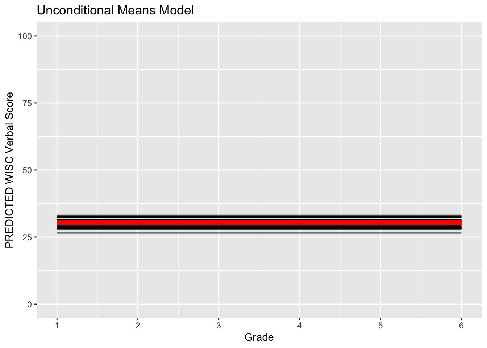

10.4 Unconditional Means Model in R
We can write the unconditional means model in R as follows.
um_fit <- lme(
fixed = verb ~ 1,
random = ~ 1|id,
data = verblong,
na.action = na.exclude
)
summary(um_fit)## Linear mixed-effects model fit by REML
## Data: verblong
## AIC BIC logLik
## 4682.66 4695.906 -2338.33
##
## Random effects:
## Formula: ~1 | id
## (Intercept) Residual
## StdDev: 4.406063 10.277
##
## Fixed effects: verb ~ 1
## Value Std.Error DF t-value p-value
## (Intercept) 33.92433 0.5174359 408 65.56238 0
##
## Standardized Within-Group Residuals:
## Min Q1 Med Q3 Max
## -1.9626206 -0.6924771 -0.1481960 0.5511044 3.1026127
##
## Number of Observations: 612
## Number of Groups: 204# um_fit2 <- lmer(
# verb ~ 1 + (1|id),
# data=verblong,
# na.action = na.exclude
# )
# summary(um_fit2)10.4.1 Interpretation
The single fixed effect in our unconditional means model is the grand mean, or \(\gamma_{00}\). Rejection of the null indicates the average verbal score between Grades 2 and 6 is non-zero.
Next we look at the random effects. The estimated etween-person variance is \(\psi_{u0}=4.4\) and the estimated within-person variance is \(\sigma^{2}_{e}=10.28\).
- The sample-level mean of the random intercept (\(\gamma_{00}\)) or the grand mean across all occasions and individuals.
- What is the implied representation of the basic information? Let’s re-create from the equations …
\[\left[\begin{array} {r} Y_{i0} \\ Y_{i1} \\ Y_{i2} \end{array}\right] = \left[\begin{array} {r} X_{0} \\ X_{1} \\ X_{2} \end{array}\right] \left[\begin{array} {r} \beta_{0} \end{array}\right] + \left[\begin{array} {r} Z_{0} \\ Z_{1} \\ Z_{2} \end{array}\right] \left[\begin{array} {r} u_{0i} \end{array}\right] + \left[\begin{array} {r} e_{i0} \\ e_{i1} \\ e_{i2} \end{array}\right]\]
In this unconditional means model the X and Z design matrices are vectors of 1s, so we get …
\[\left[\begin{array} {r} Y_{i0} \\ Y_{i1} \\ Y_{i2} \end{array}\right] = \left[\begin{array} {r} 1 \\ 1 \\ 1 \end{array}\right] \left[\begin{array} {r} \beta_{0} \end{array}\right] + \left[\begin{array} {r} 1 \\ 1 \\ 1 \end{array}\right] \left[\begin{array} {r} u_{0i} \end{array}\right] + \left[\begin{array} {r} e_{i0} \\ e_{i1} \\ e_{i2} \end{array}\right]\].
Let’s make the implied mean vector.
We extract the fixed effects from the model using fixef(), specifically the contents of the \(\beta\) matrix.
#parsing the model means structure = (fixed effects)
fixef(um_fit)## (Intercept)
## 33.92433#(Intercept)
# 33.92433
beta <- matrix(fixef(um_fit)[1],
nrow=1,ncol=1)
beta## [,1]
## [1,] 33.92433Create the model design matrix for the fixed effects. In this model this is a matrix of order 3 x 1 …
X <- matrix(c(1,1,1),
nrow=3,ncol=1)
X## [,1]
## [1,] 1
## [2,] 1
## [3,] 1Creating the model implied mean vector through multiplication \[ \mathbf{Y} = \mathbf{X}\mathbf{\beta} + 0 + 0\]
meanvector_um <- X %*% beta
meanvector_um## [,1]
## [1,] 33.92433
## [2,] 33.92433
## [3,] 33.92433Note this is the overall (grand) mean.
Making the implied variance-covariance matrix.
#parsing the model variances & covariances
VarCorr(um_fit)## id = pdLogChol(1)
## Variance StdDev
## (Intercept) 19.41339 4.406063
## Residual 105.61668 10.276997From this, we need to create the model implied variance-covariance.
Recap: the model is … \[ \boldsymbol{Y}_i = \boldsymbol{X}_i\boldsymbol{\beta} + \boldsymbol{Z}_i\boldsymbol{b}_i + \boldsymbol{e}_i \]
- where \(\mathbf{Z}_i\) is the random effects regressor (design) matrix;
- \(\boldsymbol{\beta}\) contains the fixed effects;
- \(\boldsymbol{b}_i\) contains the random effects which are distributed normally with 0 mean and covariance matrix \(\mathbf{\Psi}\) and
- \(\boldsymbol{e}_i\) are errors which are distributed normally with 0 mean and covariance matrix \(\mathbf{\Lambda_{i}}\), and
- our “standard assumption” was that \(\mathbf{\Lambda_{i}} = \mathbf{\sigma^2}\mathbf{I}\) (homogeneity of errors).
So, in order to reconstruct the implied variance-covariances, we need to find \(\mathbf{\Psi}\), \(\mathbf{\sigma^2}\), and do some multiplication.
Let’s formalize this some …
We subtract the “means” from both sides … \[\left[\begin{array} {r} Y_{i0} \\ Y_{i1} \\ Y_{i2} \end{array}\right] - \left[\begin{array} {r} X_{0} \\ X_{1} \\ X_{2} \end{array}\right] \left[\begin{array} {r} \beta_{0} \end{array}\right] = \left[\begin{array} {r} Z_{0} \\ Z_{1} \\ Z_{2} \end{array}\right] \left[\begin{array} {r} u_{0i} \end{array}\right] + \left[\begin{array} {r} e_{i0} \\ e_{i1} \\ e_{i2} \end{array}\right]\]
So on the left side we now have de-meaned scores … on the right we have a between-portion part and a within-person part … \[\left[\begin{array} {r} Y^*_{i0} \\ Y^*_{i1} \\ Y^*_{i2} \end{array}\right] = \left[\begin{array} {r} Z_{0} \\ Z_{1} \\ Z_{2} \end{array}\right] \left[\begin{array} {r} u_{0i} \end{array}\right] + \left[\begin{array} {r} e_{i0} \\ e_{i1} \\ e_{i2} \end{array}\right]\]
Let’s calculate var-cov matrix …
\[\left[\begin{array} {r} Y^*_{i0} \\ Y^*_{i1} \\ Y^*_{i2} \end{array}\right] \left[\begin{array} {r} Y^*_{i0} & Y^*_{i1} & Y^*_{i2} \end{array}\right] = \left[\begin{array} {r} Z_{0} \\ Z_{1} \\ Z_{2} \end{array}\right] \left[\begin{array} {r} u_{0i} \end{array}\right] \left[\begin{array} {r} u_{0i} \end{array}\right] \left[\begin{array} {r} Z_{0} & Z_{1} & Z_{2} \end{array}\right] + \left[\begin{array} {r} e_{i0} \\ e_{i1} \\ e_{i2} \end{array}\right] \left[\begin{array} {r} e_{i0} & e_{i1} & e_{i2} \end{array}\right]\]
By defintions we get …
\[\left[\begin{array} {r} \hat\Sigma \end{array}\right] = \left[\begin{array} {r} Z_{0} \\ Z_{1} \\ Z_{2} \end{array}\right] \left[\begin{array} {r} \Psi \end{array}\right] \left[\begin{array} {r} Z_{0} & Z_{1} & Z_{2} \end{array}\right] + \left[\begin{array} {r} \sigma^2_{e} \end{array}\right] \left[\begin{array} {r} 1 & 0 & 0 \\ 0 & 1 & 0 \\ 0 & 0 & 1 \end{array}\right]\]
- Parse the between-person variances from the model output.
Psi <- matrix(c(as.numeric(VarCorr(um_fit)[1])),
nrow=1,ncol=1)
Psi## [,1]
## [1,] 19.41339# [,1]
# [1,] 19.41339- Create the model design matrix, Z, for the random effects. In this model this is a matrix of order 3 x 1 …
Z <- matrix(c(1,1,1),
nrow=3,ncol=1)
Z## [,1]
## [1,] 1
## [2,] 1
## [3,] 1- So, the implied variance-covariance matrix of the between-person random effects for the three occasions is:
Cov1 = Z %*% Psi %*% t(Z)
Cov1## [,1] [,2] [,3]
## [1,] 19.41339 19.41339 19.41339
## [2,] 19.41339 19.41339 19.41339
## [3,] 19.41339 19.41339 19.41339Which in correlation units implies …
Delta = diag(3)
Delta[1,1] = 1/sqrt(Cov1[1,1])
Delta[2,2] = 1/sqrt(Cov1[2,2])
Delta[3,3] = 1/sqrt(Cov1[3,3])
Delta %*% Cov1 %*% Delta## [,1] [,2] [,3]
## [1,] 1 1 1
## [2,] 1 1 1
## [3,] 1 1 1… pure between-person stability … exactly as intended!
- Let’s now parse the residual/“error” variance-covariance structure
#parsing sigma2
sigma2 <- as.numeric(VarCorr(um_fit)[2])
sigma2## [1] 105.6167#creating Lambda
Lambda <- diag(1,
nrow=3,ncol=3)
Lambda## [,1] [,2] [,3]
## [1,] 1 0 0
## [2,] 0 1 0
## [3,] 0 0 1#doing the multiplication
sigma2 * Lambda## [,1] [,2] [,3]
## [1,] 105.6167 0.0000 0.0000
## [2,] 0.0000 105.6167 0.0000
## [3,] 0.0000 0.0000 105.6167… homogeneity and uncorrelated errors … exactly as intended!
- Finally - we put the between- and within- pieces together … to calculate the implied variance-covariances
varcovmatrix_um <- Z %*% Psi %*% t(Z) + (sigma2 * Lambda)
varcovmatrix_um## [,1] [,2] [,3]
## [1,] 125.03007 19.41339 19.41339
## [2,] 19.41339 125.03007 19.41339
## [3,] 19.41339 19.41339 125.03007Notice the Compound Symmetry structure!
Together with the implied mean vector, we have the entire picture provided by ALL components of the model. Amazing!
Recall what the observed mean and var-cov were …
meanvector## verb2 verb4 verb6
## 25.41534 32.60775 43.74990varcovmatrix## verb2 verb4 verb6
## verb2 37.28784 33.81957 47.40488
## verb4 33.81957 53.58070 62.25489
## verb6 47.40488 62.25489 113.74332For fun, let’s look at the misfit to the data (observed matrix - model implied matrix)
meanvector - meanvector_um## [,1]
## [1,] -8.508987
## [2,] -1.316585
## [3,] 9.825572varcovmatrix - varcovmatrix_um## verb2 verb4 verb6
## verb2 -87.74223 14.40618 27.99149
## verb4 14.40618 -71.44937 42.84150
## verb6 27.99149 42.84150 -11.28675Fit is not so good. Let’s visualize the implied model.
#Calculating predicted scores from the models
verblong$pred_um <- predict(um_fit)
#Making the prototype from the implied means
proto_um <- data.frame(cbind(c(1000,1000,1000),c(0,1,2),meanvector_um))
names(proto_um) <- c("id","time0","pred_um")
#plotting implied individual scores
ggplot(data = verblong, aes(x = time0, y = pred_um, group = id)) +
ggtitle("Unconditional Means Model") +
geom_point() +
geom_line() +
geom_point(data=proto_um, color="red", size=2) +
geom_line(data=proto_um, color="red", size=1) +
xlab("Time") +
ylab("WISC Verbal Score") +
ylim(0,100) + xlim(0,2)